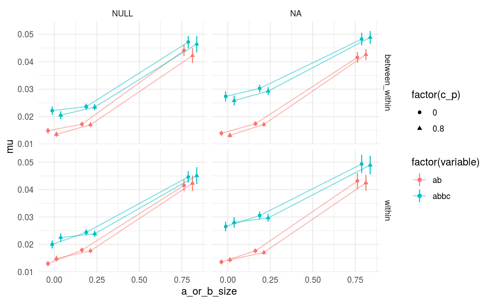
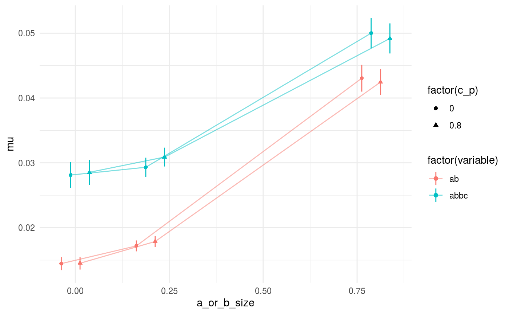

permediatr.RmdThe output from the simulations needs to be collected first from the csv output. Another aspect of the output is that each simulation gives the p-value of the indirect path as just the cumulative probability. We want to reject the null for any indirect path where that is either < .025 or > .975. I’ll summarize the output to look at the error rate (any null rejection) for each subset of simulation input (a path, b path, and c_p path). There are three ways I could imagine getting a p-value from the permutation-generated confidence interval – first, subtracting the mean of all permutations, to center the CI around 0, p_ab_perm_mean_c; second, centering that distribution around the model-estimated a*b path, p_ab_perm_ab_c; and third, taking the proportion of the CI that is below 0. In the final case, to keep the test two-sided, we reject the null when > .025 proportion of the tail is of the sign opposite the indirect effect estimate.
library(permediatr)
library(data.table)
library(ggplot2)
proportion_fp <- function(p, alpha = .05) {
left <- alpha/2
right <- 1 - alpha/2
p_fp <- mean(p < left) + mean(p > right)
p_se <- sqrt( (p_fp * (1 - p_fp)) / length(p) )
u.975 <- p_fp + 1.96 * p_se
l.025 <- p_fp - 1.96 * p_se
return(list(p_fp = p_fp, l.025 = l.025, u.975 = u.975))
}
mean_ci <- function(v, name = ''){
mu <- mean(v)
se <- sd(v)/sqrt(length(v))
u <- mu + 1.96*se
l <- mu - 1.96*se
out <- list(mu = mu, l.025 = l, u.975 = u)
names(out) <- paste0(name, names(out))
return(out)
}
perm_file_list <- dir(system.file('csv', package = 'permediatr'),
pattern = 'pmjob.*csv', full.names = TRUE)
perm_sim_results <- data.table::rbindlist(lapply(perm_file_list, data.table::fread), fill = TRUE)
set(perm_sim_results, i = which(is.na(perm_sim_results[['permtype']])), j = 'permtype', 'within')
perm_sim_results[, a_or_b_size := pmax(a,b)]
perm_sim_results[, `:=`(bias = mean_ab_perm - ab, ab_bc = 2*ab - mean_ab_perm)]
perm_sim_bias_summary <- perm_sim_results[, c(mean_ci(abs(ab), name = 'ab_'), mean_ci(abs(ab_bc), name = 'abbc_'), mean_ci(abs(bias), name = 'bias_')),
by = .(a_or_b_size, c_p, reform, permtype)]
perm_sim_bias_summary_l <- data.table::dcast(data.table::melt(perm_sim_bias_summary,
id.vars = c(c('a_or_b_size', 'c_p', 'reform', 'permtype')),
value.name = 'value')[, c('variable', 'stat') := tstrsplit(variable, "_", fixed=TRUE)],
... ~ stat, value.var = 'value')
perm_sim_results_l <- data.table::melt(perm_sim_results,
id.vars = c('a_or_b_size', 'c_p', 'reform', 'permtype'),
measure.vars = grep('p_', names(perm_sim_results), value = T),
value.name = 'p')
perm_sim_results_summary_l <- perm_sim_results_l[,
proportion_fp(p),
by = .(variable, a_or_b_size, c_p, reform, permtype)]ggplot(perm_sim_results_summary_l[reform == 'NULL' & permtype == 'within'],
aes(x = a_or_b_size, y = p_fp, group = c_p)) +
geom_hline(yintercept = .05, linetype = 'dotted') +
geom_line(alpha = .5) +
geom_linerange(aes(ymin = l.025, ymax = u.975)) +
geom_point(aes(shape = factor(c_p)), alpha = .5, size = 2) +
scale_y_continuous(breaks = c(.05, .5, 1)) +
facet_wrap(~variable) +
coord_cartesian(ylim = c(0,1)) +
theme_minimal() +
labs(title = 'reform = NULL, permutations = within',
x = 'Size of largest non-zero path (a or b)',
y = 'Proportion false positive\n(95% CI)')ggplot(perm_sim_results_summary_l[is.na(reform) & permtype == 'within'],
aes(x = a_or_b_size, y = p_fp, group = c_p)) +
geom_hline(yintercept = .05, linetype = 'dotted') +
geom_line(alpha = .5) +
geom_linerange(aes(ymin = l.025, ymax = u.975)) +
geom_point(aes(shape = factor(c_p)), alpha = .5, size = 2) +
scale_y_continuous(breaks = c(.05, .5, 1)) +
facet_wrap(~variable) +
coord_cartesian(ylim = c(0,1)) +
theme_minimal() +
labs(title = 'reform = NA, permutations = within',
x = 'Size of largest non-zero path (a or b)',
y = 'Proportion false positive\n(95% CI)')ggplot(perm_sim_results_summary_l[is.na(reform) & permtype == 'between_within'],
aes(x = a_or_b_size, y = p_fp, group = c_p)) +
geom_hline(yintercept = .05, linetype = 'dotted') +
geom_line(alpha = .5) +
geom_linerange(aes(ymin = l.025, ymax = u.975)) +
geom_point(aes(shape = factor(c_p)), alpha = .5, size = 2) +
scale_y_continuous(breaks = c(.05, .5, 1)) +
facet_wrap(~variable) +
coord_cartesian(ylim = c(0,1)) +
theme_minimal() +
labs(title = 'reform = NA, permutations = betwee_within',
x = 'Size of largest non-zero path (a or b)',
y = 'Proportion false positive\n(95% CI)')ggplot(perm_sim_bias_summary_l[variable != 'bias'], aes(x = a_or_b_size, y = mu, group = interaction(variable, c_p), color = factor(variable))) +
geom_linerange(aes(ymin = l.025, ymax = u.975), position = position_dodge(width = .1)) +
geom_line(position = position_dodge(width = .1), alpha = .5) +
geom_point(aes(shape = factor(c_p)), position = position_dodge(width = .1)) +
facet_grid(permtype ~ reform) +
theme_minimal()
boot_file_list <- dir(system.file('csv', package = 'permediatr'),
pattern = 'boot.*csv', full.names = TRUE)
boot_sim_results <- data.table::rbindlist(lapply(boot_file_list, data.table::fread), fill = TRUE)
boot_sim_results[, a_or_b_size := pmax(a,b)]
boot_sim_results[, `:=`(bias = boot_ab - ab, ab_bc = 2*ab - boot_ab)]
boot_sim_bias_summary <- boot_sim_results[, c(mean_ci(abs(ab), name = 'ab_'), mean_ci(abs(ab_bc), name = 'abbc_'), mean_ci(abs(bias), name = 'bias_')),
by = .(a_or_b_size, c_p, reform, boottype)]
boot_sim_bias_summary_l <- data.table::dcast(data.table::melt(boot_sim_bias_summary,
id.vars = c(c('a_or_b_size', 'c_p', 'reform', 'boottype')),
value.name = 'value')[, c('variable', 'stat') := tstrsplit(variable, "_", fixed=TRUE)],
... ~ stat, value.var = 'value')
boot_sim_results_l <- data.table::melt(boot_sim_results,
id.vars = c('a_or_b_size', 'c_p', 'reform', 'boottype'),
measure.vars = grep('p_', names(boot_sim_results), value = T),
value.name = 'p')
boot_sim_results_summary_l <-
boot_sim_results_l[, proportion_fp(p),
by = .(variable, a_or_b_size, c_p, reform, boottype)]ggplot(boot_sim_results_summary_l,
aes(x = a_or_b_size, y = p_fp, group = c_p)) +
geom_hline(yintercept = .05, linetype = 'dotted') +
geom_line(alpha = .5) +
geom_linerange(aes(ymin = l.025, ymax = u.975)) +
geom_point(aes(shape = factor(c_p)), alpha = .5, size = 2) +
scale_y_continuous(breaks = c(.001, .05, .5, 1), trans = scales::modulus_trans(-7, offset = 1)) +
facet_wrap(~variable) +
coord_cartesian(ylim = c(0.0001,.5)) +
theme_minimal() +
labs(title = 'reform = NA, boottype = parametric',
x = 'Size of largest non-zero path (a or b)',
y = 'Proportion false positive\n(95% CI)')ggplot(boot_sim_bias_summary_l[variable != 'bias'], aes(x = a_or_b_size, y = mu, group = interaction(variable, c_p), color = factor(variable))) +
geom_linerange(aes(ymin = l.025, ymax = u.975), position = position_dodge(width = .1)) +
geom_line(position = position_dodge(width = .1), alpha = .5) +
geom_point(aes(shape = factor(c_p)), position = position_dodge(width = .1)) +
theme_minimal()